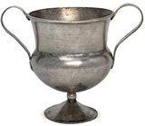

|
Publications
The following publications, arranged
in publication date order, of current and former staff members
are published by the British
Museum Press. Only those from the past 10 years are shown.
If you would like more information about other publications
please contact
us or try further
reading.
Books and catalogues
Sloan, K (ed) -2003. (with chapters by
Aileen Dawson, Jill Cook, Judy Rudoe and Silke Ackerman). Enlightenment.
Discovering the world in the eighteenth century.
Hobbs, R 2003. Treasure: Finding our Past.
Ackermann S and Buck P. 1999. Time.
Syson, L. &
Thornton, D. 2001. Objects of virtue. Art in Renaissance
Italy.
Dawson, A. 2000. French porcelain. A catalogue of the British
Museum collection. 2nd. edition.
Dawson, A. 2000. Portrait sculpture. A catalogue of the British
Museum's collections, c. 1675-1975.
Jackson R P J (ed.) 2000. Gladiators and Caesars: the power
of spectacle in ancient Rome.
Stead I M and Rigby V.1999. The Morel Collection: Iron Age
antiquities from Champagne in the British Museum.
James S and Rigby V. 1997. Britain and the Celtic Iron Age.
Johns
C M. 1997. The Snettisham Roman Jeweller's Hoard.
Johns
C M.1997. Erotica. BM Pocket Treasury.
Potter T W. 1997. Roman Britain. 2nd edition.
Stead I M and Hughes K. 1997. Early Celtic Designs.
Stratford, N. 1997. The Lewis Chessman
and the enigma of the hoard.
Hobbs,
R 1996. British Iron Age coins in the British Museum.
Stead
I M. 1996. Celtic Art. 2nd edition.Rudoe,
J. 1994. Decorative arts. A catalogue of the British Museum
collection.
Occasional papers & excavation reports
Gaimster, D. & Brisbane,
M. (eds) 2002. Novgorod. The archaeology of a medieval Russian
city and its hinterland.
Needham S P et al. 2000. The Passage of the Thames: Holocene
Environment and Settlement at Runnymede. Runnymede Bridge
Research Excavations, Volume 1.
Wayman, M L (ed) 2000. The Ferrous Metallurgy of early
Clocks and Watches, Studies in Post Medieval Steel. OP 136.
Ashton N, Lewis S and Parfitt S (eds) 1999. Excavations at
the Lower Palaeolithic Site at East Farm, Barnham, Suffolk 1989-94.
OP 125.
Gaimster, D. (ed) 1999. Maiolica in the North. The archaeology
of tin-glazed Earthenware in North-West Europe, c. 1500-1600.
Ackermann, S (ed) 1998. Humphrey Cole: Mint
Measurement and Maps in Elizabethan England. OP 126
Kinnes I A, Cameron F, Trow S and Thomson D.1998. Excavations
at Cliffe, Kent. OP 69.
Rohl B and Needham S. 1998. The Circulation of Metal in the
British Bronze Age: the application of lead isotope analysis.
OP 102.
Conway B, McNabb J and Ashton N (eds) 1996. Excavations at
Barnfield Pit, Swanscombe, 1968-72. OP 94.
Jackson R P J and Potter T W. 1996. Excavations at Stonea,
Cambridgeshire, 1980-85.
Longworth
I and Varndell G. 1996. Excavations at Grimes Graves Norfolk
1972-1976: Fascicule 5, Mining in the Deeper Mines.
Needham S P and Spence A J (eds) 1996. Refuse and Disposal
at Area 16 East, Runnymede. Runnymede Bridge Research Excavations,
volume 2.
Other
staff publications
Woodward, A & Hill, J D, eds. 2002. Prehistoric Britain:
The Ceramic Basis. Oxford, Oxbow Monographs.
Hill. J D & Cumberpatch, C G (eds.) 1995. Different Iron
Ages: Studies on the Iron Age in Temperate Europe. Oxford,
British Archaeological Reports (International Series 602).
Hill, J D. 1995. Ritual and Rubbish in the Iron Age of Wessex:
A study on the formation of a specific archaeological record.
Oxford, British Archaeological Reports (British Series 242).
|

Cup from the Water Newton treasure, Roman Britain,
4th century AD, Water Newton, Cambridgeshire
|